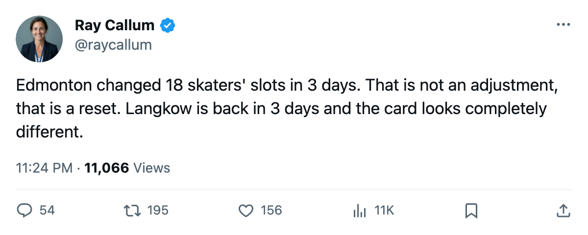
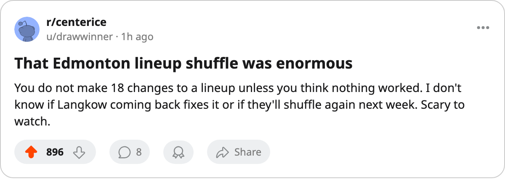

Morning Skate Notes: Edmonton Moved 18 Skaters Across Every Line and Two Defense Pairs in 3 Days
Three men in, three out, twelve more repositioned. The Oilers host Carolina tonight in their first meeting.
 Ray CallumSenior correspondent · Home Ice Network
Ray CallumSenior correspondent · Home Ice Network
Eighteen skaters on the  Edmonton Oilers lineup card had at least one slot changed between the last edition and tonight. Three men came into the lineup, three left, and twelve had their positions, wings or pair assignments moved. The shuffle touched every forward line, both penalty-kill units, and both power-play formations.
Edmonton Oilers lineup card had at least one slot changed between the last edition and tonight. Three men came into the lineup, three left, and twelve had their positions, wings or pair assignments moved. The shuffle touched every forward line, both penalty-kill units, and both power-play formations.
The additions:  Brad May73 came in at center on the third checking line and left wing on the fourth.
Brad May73 came in at center on the third checking line and left wing on the fourth.  Ethan Moreau73 took right wing on the fourth line. Micki Dupont66 came into the third-pair right slot.
Ethan Moreau73 took right wing on the fourth line. Micki Dupont66 came into the third-pair right slot.
The removals: Bobby Allen67,  Georges Laraque73, and
Georges Laraque73, and  Oleg Petrov73 all came out of the dressed lineup.
Oleg Petrov73 all came out of the dressed lineup.
The repositions:  Brad Isbister77 moved from left wing to center across the first and fourth checking lines.
Brad Isbister77 moved from left wing to center across the first and fourth checking lines.  Ryan Smyth86 moved from center to left wing on the top line and the first power-play unit.
Ryan Smyth86 moved from center to left wing on the top line and the first power-play unit.  Cory Cross71 and
Cory Cross71 and  Scott Hannan73 swapped assignments across the second pair and the penalty kill.
Scott Hannan73 swapped assignments across the second pair and the penalty kill.  Brian Pothier70,
Brian Pothier70,  Marty Reasoner75,
Marty Reasoner75,  Mike York82,
Mike York82,  Steve Staios70,
Steve Staios70,  Jani Rita81,
Jani Rita81,  Ales Hemsky81,
Ales Hemsky81,  Jonathan Cheechoo76,
Jonathan Cheechoo76,  Jesse Wallin65 each had at least one slot or side changed.
Jesse Wallin65 each had at least one slot or side changed.
Edmonton Oilers is 9-11-4 and 30 points, tied for 8th in the West with  Vancouver Canucks. The club is 5-7 at home and 8-8 on the road.
Vancouver Canucks. The club is 5-7 at home and 8-8 on the road.  Daymond Langkow79 (elbow) returns December 14, three days from now. Alexei Semenov75 (shoulder) is out until January 11.
Daymond Langkow79 (elbow) returns December 14, three days from now. Alexei Semenov75 (shoulder) is out until January 11.  Tommy Salo86 has started 23 of 28 at 82% of the workload.
Tommy Salo86 has started 23 of 28 at 82% of the workload.
Tonight's opponent is  Carolina Hurricanes, the first meeting this season. Carolina is 8-11-3, riding a 1-game win streak after a 3-2 overtime victory at
Carolina Hurricanes, the first meeting this season. Carolina is 8-11-3, riding a 1-game win streak after a 3-2 overtime victory at  Ottawa Senators on December 7, and 6-6 on the road. The Hurricanes are without
Ottawa Senators on December 7, and 6-6 on the road. The Hurricanes are without  Steve Rucchin80 (elbow, December 19) and Damian Surma76 (arm, December 20).
Steve Rucchin80 (elbow, December 19) and Damian Surma76 (arm, December 20).
A shuffle this large means the coach thinks the whole structure failed. Whether it fixes a 5-7 home record or just changes the order of the problems will be visible before Saturday.

